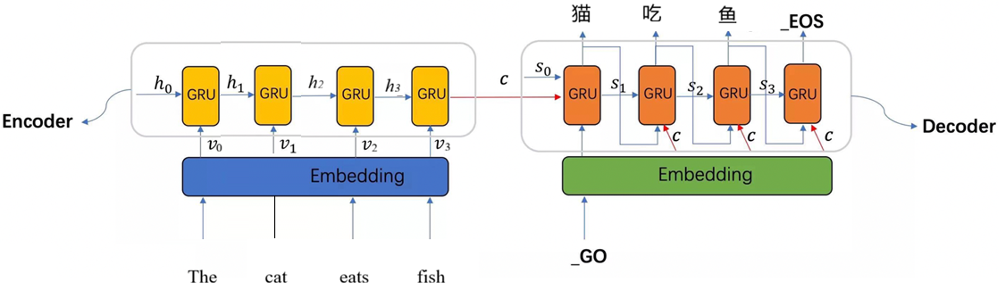
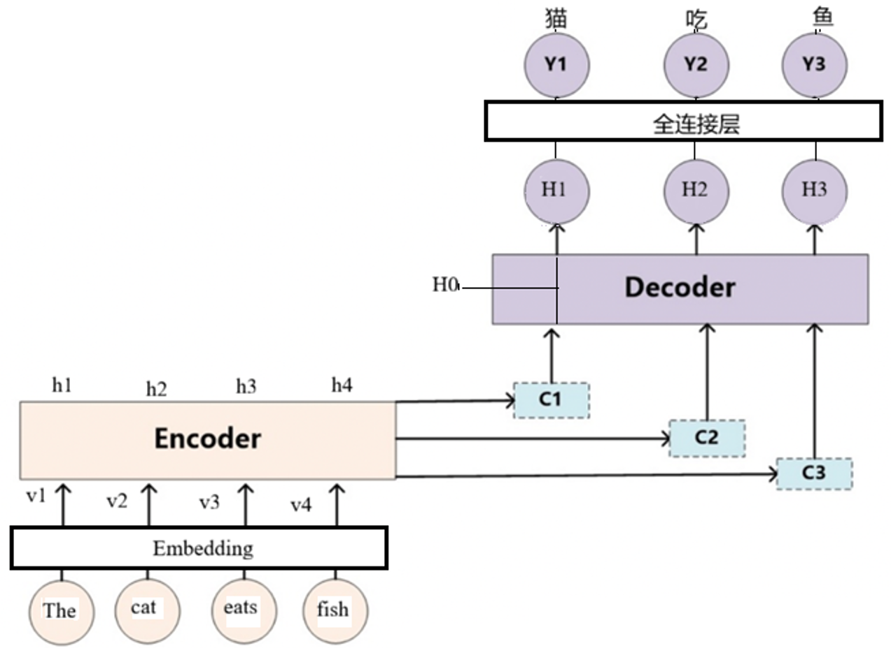
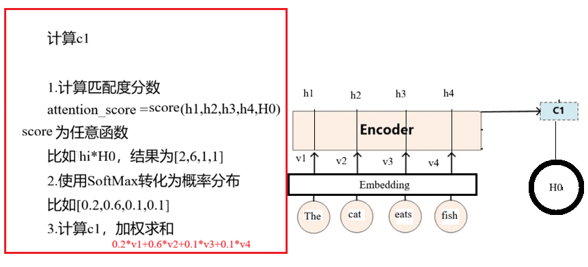
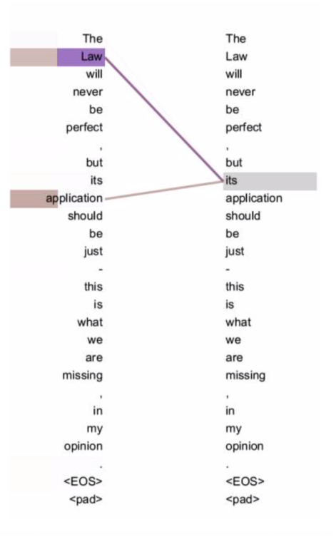
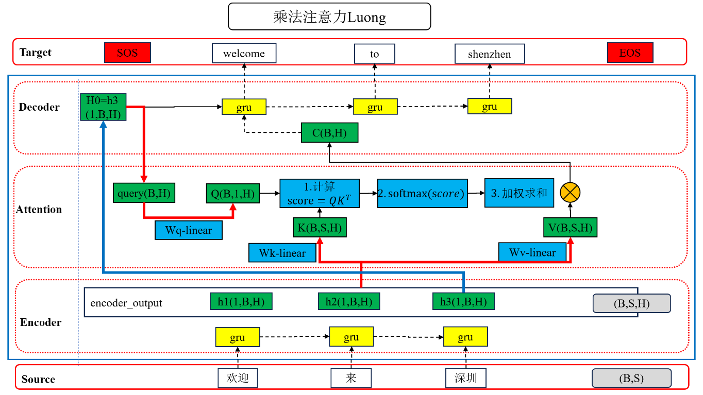
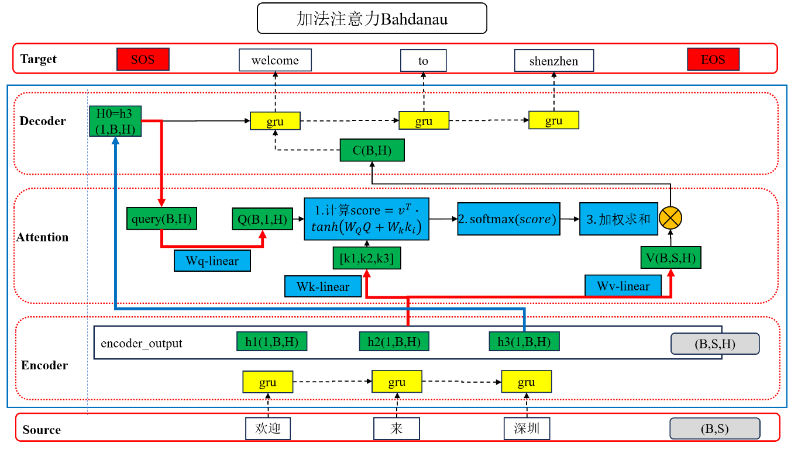
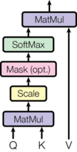

🎯 注意力机制：Q、K、V 与缩放点积
import torch import matplotlib.pyplot as plt # 设置中文字体 plt.rcParams['font.sans-serif'] = ['SimHei'] # 微软雅黑 plt.rcParams['axes.unicode_minus'] = False # 解决负号显示问题 # 设置设备，优先使用顺序：GPU > MPS > CPU DEVICE = torch.device( "cuda" if torch.cuda.is_available() else "mps" if torch.backends.mps.is_available() else "cpu" ) print(f"当前设备：{DEVICE}")
当前设备：cuda
学习目标
- 了解注意力机制的由来
- 理解注意力机制是什么
- 理解注意力机制的计算过程
- 理解常见的注意力计算规则
1 注意力机制的由来
先看一个翻译例子：
The cat eats fish → 猫 吃 鱼
问题：
当模型在翻译 “鱼” 时，应该重点关注哪一个英文单词？
- The ❌
- cat ❌
- eats ❌
- fish ✅
不同的输出词，应该关注输入中不同的位置
但在早期的 Encoder–Decoder 模型中：
- 所有输出词，都使用同一个向量表示
- 模型无法区分“重点”和“非重点”
这就是 Attention 要解决的问题 —— 学会“看重点”
2 注意力机制是什么
2.1 注意力机制的核心思想
注意力机制的核心思想：让模型自动学会关注重要信息，而弱化不重要部分。
- 生物学灵感：人在观察复杂场景时会自动聚焦关键信息（如看图片时眼睛会集中在有趣的物体上）。
- 机器学习应用：在 NLP 和 CV 中，通过学习动态权重分布，让模型对不同输入位置施加不同程度的关注。
- 实际效果：在机器翻译中，生成每个目标词时只需关注源语言中最相关的几个词，而不是整个句子。
举个栗子 - 人的注意力
- 当我们看到下面这张图时
- 在短时间内处理信息时，大脑注意力只关注吸引人的部分, 类似下图所示.
2.2 对比有无Attention的Encoder-Decoder模型
无Attention的Encoder-Decoder框架

结构： - Encoder 将整个输入序列压缩为 一个固定的向量 $C$ - Decoder 用这个单一向量 $C$ 生成整个输出序列
问题： - 长句子时，一个向量无法存储所有信息（信息瓶颈） - 对所有输出词使用同样的上下文向量 $C$，无法体现不同词之间的相关性
例子：翻译"The cat eats fish" → "猫 吃 鱼"时 - 生成"猫"应该关注"cat" - 生成"吃"应该关注"eats" - 生成"鱼"应该关注"fish"
但无Attention的 Encoder-Decoder 框架 对所有输出词都使用同一个 $C$，这是不合理的。
- 对于 句子 到 句子的通用模型。目标是给定输入句子Source，通过Encoder-Decoder框架来生成目标句子Target。而Source和Target分别为： $$ Source = \langle X_1,X_2 \cdots X_m \rangle \ Target = \langle y_1,y_2 \cdots y_n \rangle $$
- 编码器Encoder 对输入Source进行编码，通过非线性变换转化为中间语义表示C： $$ C = GRU(X_1,X_2 \cdots X_m) $$
- 解码器Decoder 根据句子Source的中间语义表示C和之前已经生成的历史信息,$y_1, y_2…y_{i-1}$来生成i时刻的预测值 $$ y_i = GRU(C,y_1,y_2 \cdots y_{i-1}) $$
- 上述图的Encoder-Decoder框架是没有使用“注意力机制”的。目标句子Target中每个单词的生成过程如下： $$ y_1 = f(C) \ y_2 = f(C, y_1) \ y_3 = f(C, y_1, y_2) $$
- 不论生成哪个单词，中间语义表示C都是一样的。对于target中的任何一个单词，source中任意单词对某个目标单词$y_i$的影响力都是相同的，模型没有学会"找重点"。
加Attention的Encoder-Decoder框架

-
添加了注意力机制，中间语义表示C就会根据注意力权重变化。每生成一个target词时，根据对应source中词的注意力权重动态计算一个专属的 context 向量：
- 不再用同一个 $C$，而是根据当前要解码的词(上个时间步的target词)，计算一个动态的 $C_i$
- 对 Encoder 的输出加权求和，权重反映了当前target词与输入source各位置的相关性
比如： - 生成"猫"时，计算权重分布：(The, 0.1), (cat, 0.7), (eats, 0.1), (fish, 0.1)，加权求和得 $C_1$ - 生成"吃"时，计算权重分布：(The, 0.05), (cat, 0.1), (eats, 0.8), (fish, 0.05)，加权求和得 $C_2$ - 生成"鱼"时，计算权重分布：(The, 0.05), (cat, 0.05), (eats, 0.1), (fish, 0.8)，加权求和得 $C_3$
这样每个输出词都能关注到最相关的输入词，提升翻译质量。
-
生成目标句子单词的过程为： $$ y_1 = f1(C_1, h_0) \ y_2 = f1(C_2, h_0, h_1) \ y_3 = f1(C_3, h_0, h_1, h_2) $$
-
每个Ci对应着不同的source句子单词的注意力分配概率分布,公式为： $$ C_i = \sum_{j=1}^{L_x}a_{ij}v_j $$ 其中，
- $v_j$为source中词的语义表示，一般为词向量经过线性映射的结果
- $a_{ij}$为source中第j个单词对target中第i个单词的注意力概率分布
- $L_x$为source句子的长度
比如中间语义张量Ci如下: $$ C_{1}=0.2v1 + 0.6v2 + 0.1v3 + 0.1v4 \ C_{2}=0.1v1 + 0.2v2 + 0.6v3 + 0.1v4 \ C_{3}=0.1v1 + 0.1v2 + 0.2v3 + 0.6v4 \ $$
3 注意力机制的计算过程
3.1 Attention 的统一计算公式
不管是哪种 Attention，本质公式都是：
$$ Attention(Q, K, V) = softmax(score(Q, K)) \cdot V $$
计算过程：
-
打分：得到注意力分数 $$ attention_score = score(Q, K) $$
-
归一化：得到注意力权重 $$ \alpha = softmax(attention_score) $$
-
加权求和：用注意力权重 加权 V, 得到上下文向量/注意力输出 $$ context = \sum_i \alpha_i v_i $$
其中的Q,K,V:
- Q（Query）：查询，当前要“查什么”（当前词/当前位置的表示）
- K（Key）：键，每个候选位置的“索引特征”
- V（Value）：值，每个候选位置的“内容信息”
Q/K/V 通常是词向量、隐藏状态或其线性变换，不一定是原始句子。
3.2 注意力机制的分类
- 按权重形式：软注意力 vs 硬注意力
-
按 Q/K/V 来源：普通注意力 vs 自注意力
-
按注意力权重形式分类
| 类型 | 权重形式 | 是否可导 | 训练方式 | 工程现状 | 典型场景 |
|---|---|---|---|---|---|
| 软注意力（Soft / Global）⭐主流 | 连续值 ∈ [0, 1]，并归一化 | ✅ 可导 | 反向传播 | 工业标准 | Transformer、BERT、GPT |
| 硬注意力（Hard / Local）了解 | 离散选择（0/1，只选一个或少数） | ❌ 不可导 | 强化学习 / 采样 | 几乎不用 | 早期研究、toy实验 |
现代深度学习中，99% 使用的是软注意力。
- 按 Q/K/V 来源分类
| 类型 | Q/K/V 来源 | 是否支持并行 | 典型结构 | 工程应用 |
|---|---|---|---|---|
| 普通注意力（Cross / General） | Q 来自解码器，K/V 来自编码器 | 部分并行 | Encoder–Decoder Attention | 机器翻译、图文检索 |
| 自注意力（Self）⭐核心 | Q/K/V 全部来自同一序列 | ✅ 全并行 | Transformer Self-Attention | BERT、GPT、ViT |
Transformer 的突破来自：软注意力 + 自注意力 + 并行计算。
- 总结
| 权重形式 | QKV 来源 | 是否主流 | 示例 |
|---|---|---|---|
| 软注意力 | 自注意力 | ⭐⭐⭐⭐⭐ | Transformer Encoder |
| 软注意力 | 普通注意力 | ⭐⭐⭐⭐ | Encoder–Decoder Cross-Attention |
| 硬注意力 | 自注意力 | ❌ | 几乎无工程价值 |
| 硬注意力 | 普通注意力 | ❌ | 早期论文探索 |
3.3 Soft Attention (最常见)-掌握
- 以机器翻译为例：输入英文句子 source: "The cat eats fish"，翻译为中文句子 target: "猫 吃 鱼"。
- 加Attention的Encoder-Decoder框架的注意力计算过程
-
添加了注意力机制，中间语义表示C就会根据注意力权重变化。每生成一个target词时，根据对应source中词的注意力权重动态计算一个专属的 context 向量：
- 不再用同一个 $C$，而是根据当前要解码的词(上个时间步的target词)，计算一个动态的 $C_i$
- 对 Encoder 的输出加权求和，权重反映了当前target词与输入source各位置的相关性
中间语义张量/注意力值的计算过程

- Step 1：计算注意力分数
$$ attention_score = score(Q, K) $$
- Step 2：softmax转换为注意力概率分布
$$ \alpha_i = softmax(attention_score) $$
- Step 3：加权求和得到中间语义表示
$$ context = \sum_i \alpha_i v_i $$
- 注意力机制输入由三部分构成：Query、Key和Value。其中，Key, Value都是source中每个单词对应的语义编码，是具有关联的KV对，Query是输入的“问题”，Attention可以将Query转化为与Query最相关的向量表示。
举例看 Q / K / V
例1：大脑看图 - Query：你的当前关注点（"我想看这里"） - Key：图中各物体的特征提示（"锦江饭店"、"行人"等标记） - Value：图中各物体的完整信息（像素、颜色等） - Attention：最终看到的重点信息（例如"锦江饭店"部分被放大）
例2：搜索引擎 - Query：用户输入的关键词 - Key：网页文档的关键特征 - Value：完整的网页内容 - Attention：最相关的搜索结果排在前面
例3：机器翻译 - Query：当前要生成的词在 Decoder 中的表示 - Key：源语言各单词在 Encoder 中的表示 - Value：源语言各单词的完整信息 - Attention：生成当前词时，源语言中最相关词的加权融合
3.4 Self Attention（自注意力）
Self Attention 指 序列内部元素之间计算注意力。
- Query、Key、Value 来自同一序列
- 计算公式不变，仅 计算对象发生变化
- 可理解为：Source = Target 的 Attention
如下所示：

Self Attention的优势：
- 任意两个 token 一步建立联系
- 不受序列距离影响
- 支持并行计算
- 更适合长序列建模（Transformer 的核心）
3.5 注意力机制的两种实现 — 加法（Additive）和乘法（Multiplicative）
乘法注意力 LuongAttention： 使用向量点积（或线性变换后的点积）一次性计算 Q 与所有 K 的注意力分数，得到 score(Q, K)，再对整个 score(Q, K) 做 softmax，得到注意力权重分布。
加法注意力 BahdanauAttention： 对每个 $(Q, k_i)$ 通过前馈网络计算对齐分数，拼接所有时间步的分数后统一做 softmax，得到注意力权重分布。
乘法注意力和加法注意力对比：分数-softmax-加权求和
| 步骤 | 乘法注意力（Luong） | 加法注意力（Bahdanau） |
|---|---|---|
| Step 1. 计算注意力分数 | $score(Q, K) = Q \cdot K^T$ | $score(Q, k_i) = \boldsymbol{v}^T \cdot \tanh(\boldsymbol{W}_Q Q + \boldsymbol{W}_k k_i)$ |
| Step 2. softmax 归一化 | $\alpha = \text{softmax}(score)$ | $\alpha = \text{softmax}\left([score_1, score_2, \dots, score_T]\right)$ |
| Step 3. 加权求和 | $context = \sum_i \alpha_i \cdot v_i$ | $context = \sum_i \alpha_i \cdot v_i$ |
关键区别：乘法注意力通过 向量点积 计算注意力分数，计算效率高，可矩阵并行；加法注意力通过 可学习的前馈网络（含参数 $\boldsymbol{W}_Q$、$\boldsymbol{W}_k$、$\boldsymbol{v}$）逐个计算对齐注意力分数，多了一个前馈网络，计算较慢。
工程提示：乘法注意力，实际代码中通常对 Q、K、V 先做线性变换到合适维度，然后批量计算。
乘法注意力（Multiplicative / Luong）⭐ 高性能

加法注意力（Additive / Bahdanau）

添加Attention 的Encoder-Decoder 的解码流程（自回归生成下一个词）
生成目标序列时，每一步的流程：
- 当前词 embedding：将上一步的预测词（或真实词）映射为向量
- Decoder RNN 计算：得到当前时间步的隐藏状态 $h_t^{dec}$（作为 Query）
- 计算注意力： - Encoder 的所有隐藏状态作为 Key 和 Value - 用 $h_t^{dec}$ 作为 Query - 计算权重分布，加权求和得 context
- 融合并预测：将 context 与 $h_t^{dec}$ 融合，通过 softmax 预测下一个词
关键技术： - Teacher Forcing（训练时）：使用真实的目标词作为下一步输入，避免错误累积 - 自回归生成（推理时）：使用模型预测的词作为下一步输入
- 注意：这里的Encoder-Decoder架构采用了RNN网络，所以Encoder 或 Decoder 的输出为隐藏状态，但是其他网络就不一定是隐藏状态，不要混淆！
4 注意力机制的计算公式
4.1 Attention 的统一计算公式
$$ Attention(Q, K, V) = softmax(score(Q, K)) \cdot V $$
4.2 常见的注意力计算规则
- 拼接线性注意力
$$ Attention(Q,K,V)=\mathrm{Softmax}(\mathrm{Linear}([Q,K]))\cdot V $$
- 拼接-激活型注意力（Bahdanau 加法注意力）
$$ Attention(Q,K,V)=\mathrm{Softmax}(\boldsymbol{v}^T \tanh(\boldsymbol{W}[Q,K]))\cdot V $$ 其中 $\boldsymbol{W}$ 和 $\boldsymbol{v}$ 是可学习参数。
- 缩放点积注意力（Transformer 核心）⭐ 推荐
$$ Attention(Q,K,V)=\mathrm{Softmax}\left(\frac{QK^T}{\sqrt{d_k}}\right)V $$
公式说明：
- $Query (Q)$：(batch_size, tgt_seq_len, d_k)，查询向量，通常来自Decoder隐藏状态或自注意力中的同一序列
- $Key (K)$：(batch_size, src_seq_len, d_k)，键向量，特征维度为 $d_k$（与Q相同）
- $Value (V)$：(batch_size, src_seq_len, d_v)，值向量，特征维度为 $d_v$（通常等于 $d_k$）
- $QK^T$: (batch_size, tgt_seq_len, src_seq_len)
- $d_k$：K 的特征维度（最后一个轴的长度）
- 输出：(batch_size, tgt_seq_len, d_v)
注意：通常的 $d_k$ 和 $d_v$ 都等于 $d_model$，即输入输出的维度一致。
4.3 为什么缩放点积注意力要除以 $\sqrt{d_k}$？
$$ Attention(Q,K,V)=Softmax\left(\frac{QK^T}{\sqrt{d_k}}\right)V $$
问题根源：当特征维度 $d_k$ 增大时，点积结果的方差也随之增大为$d_k$，导致 softmax 输入过大，使注意力分布趋于 one-hot，容易梯度消失。
数学推导：
在点积注意力中，注意力分数由向量点积得到：
$$ s = Q \cdot K^T = \sum_{i=1}^{d_k} q_i k_i $$
假设 Q 和 K 中的元素都来自标准正态分布 $\mathcal{N}(0,1)$（独立、零均值、单位方差），则点积的方差为：
$$ \text{Var}(Q \cdot K^T) = d_k $$
这意味着特征维度越大，点积值波动越剧烈，softmax 容易"饱和"到某一个位置，导致梯度消失。
解决方案：将点积除以 $\sqrt{d_k}$ 进行缩放：
$$ \text{Var}\left(\frac{Q \cdot K^T}{\sqrt{d_k}}\right) = \frac{\text{Var}(Q \cdot K^T)}{d_k} = 1 $$
- 使注意力分数的方差与特征维度无关
- 保持 softmax 的梯度稳定
- 模型收敛更稳定
举个栗子（batch_size=1）：
假设 Q 和 K 分别为：
$$ Q = \begin{bmatrix} 1 & 0 & 1 & 0\ 0 & 1 & 0 & 1\ 1 & 1 & 0 & 0 \end{bmatrix} \quad (3 \times 4), \quad d_k = 4 $$
$$ K = \begin{bmatrix} 0 & 1 & 0 & 1\ 1 & 0 & 1 & 0\ 1 & 1 & 1 & 1 \end{bmatrix} \quad (3 \times 4), \quad d_k = 4 $$
$$ QK^T = \begin{bmatrix} 0 & 2 & 2\ 2 & 0 & 2\ 1 & 1 & 2 \end{bmatrix} $$
未缩放情况： - 方差约为 $d_k = 4$（较大）
缩放情况（除以 $\sqrt{d_k} = 2$）：
$$ \frac{QK^T}{\sqrt{d_k}} = \begin{bmatrix} 0 & 1 & 1\ 1 & 0 & 1\ 0.5 & 0.5 & 1 \end{bmatrix} $$
- 方差约为 1（与维度无关）
- softmax 时，分布更均匀，梯度更稳定
4.4 bmm批量矩阵乘法
""" 演示 张量的批量矩阵乘法运算bmm/@-3D张量的矩阵乘法 高维张量的矩阵乘法 torch.bmm: 批量矩阵乘法，用于3D张量的矩阵乘法，做了一些优化，可以加速计算5% 3D: A(batch_size, m, n), B(batch_size, n, m) torch.matmul/@: pytorch中通用的矩阵乘法，用于多维张量的矩阵乘法 运算规则: A @ B,就是 A.shape[-2:] @ B.shape[-2:], 前面的轴不变 比如 3D: A(batch_size, m, n), B(batch_size, n, m) 4D: A(batch_size, d, m, n), B(batch_size, d, n, m) 需要掌握的: torch.matmul/@ """ # 导包 import torch # 0.设置随机种子 torch.manual_seed(4) # 1.创建两个张量 # 3D t1 = torch.randn(2,3,4) t2 = torch.randn(2,4,3) print(f"t1:{t1.shape}") print(f"t2:{t2.shape}") # 2.进行矩阵乘法 # 使用bmm t3 = torch.bmm(t1, t2) # (2,3,3) print(f"t3:{t3.shape}") # 使用matmul/@ # t4 = t1 @ t2 t4 = torch.matmul(t1, t2) print(f"t4:{t4.shape}") # 3.演示4D张量的矩阵乘法 # 4D张量 t1 = torch.randn(3,2,3,4) t2 = torch.randn(3,2,4,3) # # 使用bmm # t3 = torch.bmm(t1, t2) # (3,2,3,3) # print(f"t3:{t3.shape}") # 使用matmul/@ # t4 = t1 @ t2 t4 = torch.matmul(t1, t2) # (3,2,3,3) print(f"t4:{t4.shape}")
t1:torch.Size([2, 3, 4])
t2:torch.Size([2, 4, 3])
t3:torch.Size([2, 3, 3])
t4:torch.Size([2, 3, 3])
t4:torch.Size([3, 2, 3, 3])
4.5 注意力机制的代码实现
缩放点积注意力（Transformer 核心）
$$ Attention(Q,K,V)=Softmax\left(\frac{QK^T}{\sqrt{d_k}}\right)V $$
注意力机制在网络中实现的图形表示:

""" 演示 缩放点积注意力机制的实现 这是后面要学的Transformer架构的最常用的注意力机制 核心公式： Attention(Q,K,V)=softmax(Q·K^T/sqrt(d_k))·V 计算步骤： 1. 计算注意力分数：QK^T（Query 与 Key 做bmm） 2. 缩放：除以 sqrt(d_k) 防止梯度消失 3. Softmax：转换为注意力权重（概率分布） 4. 加权求和：用权重对 Value 加权求和，bmm 任务描述： 自定义三个张量: Q,K,V, 模拟由source序列生成的K,V 和由target序列生成的Q Q: (batch_size, tgt_seq_len, d_k), (2, 3, 32) K: (batch_size, src_seq_len, d_k), (2, 4, 32) V: (batch_size, src_seq_len, d_v), (2, 4, 64) QK^T: (batch_size, tgt_seq_len, src_seq_len), (2, 3, 4) Attention(Q, K, V): (batch_size, tgt_seq_len, d_v), (2, 3, 64) 定义参数： batch_size = 2 tgt_seq_len = 3 src_seq_len = 4 d_k = 32 d_v = 64 """ # 导包 import torch import torch.nn as nn import torch.nn.functional as F import math # 1.定义模型类，实现缩放点积注意力 class MyScaledDotProductAttention(nn.Module): # 1.定义__init__方法 def __init__(self, d_k, dropout=0.1): # 1.初始化父类成员 super().__init__() # 2.初始化参数 self.d_k = d_k self.dropout = nn.Dropout(dropout) # 2.定义forward方法 def forward(self, Q, K, V): """ 根据传入的Q,K,V, 进行缩放点积注意力计算，输出注意力结果 :param Q:query, (batch_size, tgt_seq_len, d_k), (2, 3, 32) :param K:key, (batch_size, src_seq_len, d_k), (2, 4, 32) :param V:value, (batch_size, src_seq_len, d_v), (2, 4, 64) :return: Attention(Q, K, V): (batch_size, tgt_seq_len, d_v), (2, 3, 64) """ # 1.打分，计算QK^T，然后缩放 # scores = torch.bmm(Q, K.permute(0, 2, 1)) # scores = torch.matmul(Q, K.permute(0, 2, 1)) scores = Q @ K.permute(0, 2, 1) scores = scores / self.d_k**0.5 # (batch_size, tgt_seq_len, src_seq_len), (2, 3, 4) print(f"scores:{scores},shape:{scores.shape}") # 2.归一化，对scores进行softmax attention_weights = F.softmax(scores, dim=-1) # (batch_size, tgt_seq_len, src_seq_len), (2, 3, 4) print(f"attention_weights:{attention_weights},shape:{attention_weights.shape}") # 3.加权求和, attention_weights @ V output = attention_weights @ V # 4.返回结果 return output, attention_weights # 测试 if __name__ == '__main__': # 1.定义参数 batch_size = 2 tgt_seq_len = 3 src_seq_len = 4 d_k = 32 d_v = 64 # 2.创建三个张量，模拟Q,K,V torch.manual_seed(4) # Q: (batch_size, tgt_seq_len, d_k), (2, 3, 32) # K: (batch_size, src_seq_len, d_k), (2, 4, 32) # V: (batch_size, src_seq_len, d_v), (2, 4, 64) Q = torch.randn(batch_size, tgt_seq_len, d_k) K = torch.randn(batch_size, src_seq_len, d_k) V = torch.randn(batch_size, src_seq_len, d_v) # 3.创建MyScaledDotProductAttention对象 model = MyScaledDotProductAttention(d_k=d_k) # 4.前向传播，进行缩放点积注意力计算 output, attention_weights = model(Q, K, V) # 5.打印结果 print(f"output:{output},shape:{output.shape}") print(f"attention_weights:{attention_weights},shape:{attention_weights.shape}") print(f"attention_weights.sum(dim=-1):{attention_weights.sum(dim=-1)},shape:{attention_weights.sum(dim=-1).shape}")
scores:tensor([[[-0.4776, 1.0012, -1.8377, 1.1376],
[-0.7308, -0.1800, -0.3831, 0.3961],
[-0.5707, -1.8032, 1.9914, -0.1542]],
[[ 0.0398, -0.4659, -1.5375, 2.7221],
[-0.9788, -0.7040, -0.0861, -0.0118],
[ 0.2569, -1.2182, -0.1376, 0.9253]]]),shape:torch.Size([2, 3, 4])
attention_weights:tensor([[[0.0937, 0.4111, 0.0240, 0.4712],
[0.1382, 0.2397, 0.1956, 0.4265],
[0.0634, 0.0185, 0.8219, 0.0962]],
[[0.0609, 0.0367, 0.0126, 0.8898],
[0.1354, 0.1782, 0.3305, 0.3560],
[0.2595, 0.0594, 0.1749, 0.5063]]]),shape:torch.Size([2, 3, 4])
output:tensor([[[ 0.4021, 0.0885, 0.5565, -0.7996, -0.4164, 0.7047, -0.6301,
0.1744, 0.0158, -0.3262, 0.6850, 0.1071, 0.0303, -0.3318,
-0.3400, -1.1363, 0.5044, 0.1480, -0.5541, -0.2080, -1.0427,
0.5099, 0.8114, 0.6299, -1.1842, -0.7387, 0.1224, 0.5452,
0.1940, -0.0680, -0.5066, -1.1814, 0.6538, 1.3218, -1.4250,
0.5582, 0.5684, -0.4645, -1.6912, -0.4858, -0.7105, 1.8810,
-0.0739, -1.1244, 0.3393, -1.7194, 0.3221, -0.5374, -0.0500,
0.3648, -0.1143, -0.0169, 0.3675, 0.7749, 0.4508, 0.1307,
-0.4931, -0.3764, -1.4234, 0.3698, 0.4856, -0.7815, -0.1727,
0.9032],
[ 0.6119, 0.0324, 0.2325, -0.1747, -0.2984, 0.4219, -0.6982,
0.2360, -0.1005, -0.3636, 0.4318, 0.0269, -0.0795, -0.5596,
-0.2568, -0.8901, 0.4055, 0.3024, -0.6317, -0.1934, -0.5274,
0.7722, 0.2731, 0.0855, -0.6804, -0.6029, -0.0403, 0.4827,
0.2618, 0.0567, -0.8595, -1.2069, 0.4426, 1.2901, -0.8747,
0.4856, 0.4981, -0.6978, -1.3939, -0.2704, -0.4878, 1.4443,
-0.4524, -1.0446, 0.1304, -1.5140, 0.2065, -0.5224, -0.0461,
0.3469, 0.2901, 0.1264, 0.2907, 0.2876, 0.2941, -0.0970,
-0.4931, -0.4899, -1.2121, 0.2934, 0.8741, -0.4165, 0.0104,
0.8224],
[ 0.8769, 0.0956, -0.5388, 1.3595, -0.5124, -0.4733, -1.1414,
0.4738, -0.6845, -0.0401, -0.3051, 0.1178, -0.5227, -0.7801,
0.7343, -0.3046, -0.1129, 0.1080, -0.7408, -0.0188, 0.8324,
2.4959, -0.4486, -1.0734, 1.1918, -1.0836, -0.9549, 0.3116,
0.4952, -0.1140, -1.5753, -0.9438, -0.3488, 1.1019, 0.6430,
-0.1601, 0.6754, -1.7604, -0.7095, -0.1615, -0.3077, 0.7929,
-1.6462, -1.1886, -0.5740, -0.9331, -0.2963, -0.7803, -0.1637,
-0.0539, 1.4416, 0.1392, -0.8692, -1.0627, 0.3036, -0.4991,
-0.2895, -1.2055, -0.6909, -0.3243, 1.7453, 0.2853, 0.1302,
0.0996]],
[[-1.1046, -0.2482, -0.9735, -0.5917, 0.6379, 0.9760, -0.2310,
1.8419, 1.4711, -0.3771, -1.9668, 0.8442, 1.9439, 0.8631,
0.1825, -1.3887, 0.5865, 0.1114, 2.0290, -0.6996, 0.7516,
-0.9201, 1.3693, 0.9436, 0.8800, 0.2398, 0.5840, -0.4785,
0.3750, 0.0482, -1.4542, -0.3949, 0.6937, 1.2446, -0.9023,
0.9241, 0.0106, 1.3804, -0.5187, 0.2800, 0.6370, 0.6373,
-0.7812, 0.0856, -1.8565, -0.1425, 0.2484, -0.8032, -0.3760,
-0.3730, -0.7464, -0.1997, 0.5500, -0.8505, -0.1268, 0.7685,
0.9769, -0.8044, -0.7676, -0.4562, 1.4220, -0.0134, 0.9202,
-0.5545],
[-0.4680, -0.3430, -1.2045, -0.0545, -0.2706, 0.6517, -0.6617,
0.1627, 0.1879, -0.3140, -0.7662, 0.0674, 1.1048, 0.6485,
-0.3639, -0.9064, 0.2249, -0.2778, 1.2249, -0.2868, 0.2778,
-0.3452, 0.6674, 0.0389, 0.2233, -0.4266, -0.0489, -0.5197,
0.2338, -0.8232, -0.0819, -0.4585, -0.0036, 0.2954, -0.1461,
0.1408, -0.4057, 1.2895, -0.4349, 0.2957, 0.5681, 0.5642,
-0.9384, 0.2354, -0.4390, 0.1854, 0.6896, -0.6123, -0.5696,
0.2511, -0.7967, -0.0303, 0.1613, 0.1277, 0.5152, 0.8348,
0.7116, 0.5577, 0.3597, -0.3039, 0.5860, -0.5756, 0.1151,
-0.7484],
[-0.7657, -0.1915, -1.2684, -0.2585, 0.0536, 0.3503, -0.5535,
0.9167, 0.7069, 0.0810, -1.1015, 0.3149, 1.4973, 0.6019,
-0.1842, -0.8820, 0.3015, -0.1197, 1.5342, -0.2804, 0.4481,
-0.7583, 0.6330, 0.3875, 0.3766, -0.3572, 0.0312, -0.5775,
0.4623, -0.1618, -0.7456, -0.3460, 0.4294, 0.7821, -0.2088,
0.3149, -0.3568, 1.0187, -0.1500, 0.0898, 0.4576, 0.4588,
-0.8910, 0.2720, -0.7576, 0.2893, 0.3344, -0.8171, -0.5312,
-0.0150, -0.7089, -0.3853, 0.1015, -0.2704, 0.1155, 0.9799,
0.9811, -0.2796, 0.0946, -0.4666, 0.7139, -0.2681, 0.4929,
-0.3573]]]),shape:torch.Size([2, 3, 64])
attention_weights:tensor([[[0.0937, 0.4111, 0.0240, 0.4712],
[0.1382, 0.2397, 0.1956, 0.4265],
[0.0634, 0.0185, 0.8219, 0.0962]],
[[0.0609, 0.0367, 0.0126, 0.8898],
[0.1354, 0.1782, 0.3305, 0.3560],
[0.2595, 0.0594, 0.1749, 0.5063]]]),shape:torch.Size([2, 3, 4])
attention_weights.sum(dim=-1):tensor([[1.0000, 1.0000, 1.0000],
[1.0000, 1.0000, 1.0000]]),shape:torch.Size([2, 3])
5 总结
为什么需要注意力机制？
-
传统 seq2seq 存在的问题： 1. 单一向量难以存储长序列信息 2. 无法表示输出词与输入词之间的相关性
-
注意力机制的优势：让模型自动学会，关注最相关的部分，忽略不相关的部分
注意力机制的核心
Attention 统一公式：
$$ Attention(Q, K, V) = softmax(score(Q, K)) \cdot V $$
三类注意力的对比
| 类型 | 权重 | 训练难度 | 实用性 | 主要用途 |
|---|---|---|---|---|
| 软注意力 | [0,1] 连续 | 易 | ⭐⭐⭐ | 几乎所有任务 |
| 硬注意力 | {0, 1} 离散 | 难 | ⭐ | 理论研究 |
| 自注意力 | [0,1] 连续 | 易 | ⭐⭐⭐⭐⭐ | Transformer、BERT、GPT 等 |
实现方式
- 加法型（Bahdanau）：灵活，计算稍慢
- 乘法型（Luong / Scaled Dot）：高效，主流选择
当代关键技术
- 多头注意力
- 掩码机制
- 位置编码
- 高效实现（FlashAttention 等）
下一步：深入理解 Transformer 架构，它是注意力机制的完美展示。
6 常见面试题
缩放点积注意力的公式是什么？为什么要除以 $\sqrt{d_k}$？
- $\text{Attention}(Q,K,V)=\text{softmax}(QK^T/\sqrt{d_k})V$，缩放可避免内积过大导致 softmax 梯度过小。
自注意力与交叉注意力有什么区别？
- 自注意力：Q/K/V 来自同一序列。
- 交叉注意力：Q 来自解码器，K/V 来自编码器。
常见的注意力 Mask 有哪些？用途是什么？
- Padding Mask：忽略填充位。
- Causal Mask：保证生成时不看未来。
加法注意力与乘法/点积注意力的差异是什么？
- 加法使用 MLP 计算相似度，点积使用向量内积；点积计算更高效。
6.1 代码作业
-
- 手动实现 Scaled Dot-Product Attention 函数（不使用任何注意力相关 API）：输入 Q/K/V 三个矩阵（形状均为
(batch_size=2, seq_len=5, d_k=16)），计算注意力权重和输出，打印权重矩阵形状及每行权重之和（应近似为 1.0），验证公式 $\text{Attention}(Q,K,V) = \text{softmax}(\frac{QK^T}{\sqrt{d_k}})V$。
- 手动实现 Scaled Dot-Product Attention 函数（不使用任何注意力相关 API）：输入 Q/K/V 三个矩阵（形状均为
import torch import torch.nn as nn import torch.nn.functional as F import math # ============================== # 作业1：手动实现 Scaled Dot-Product Attention # ============================== def scaled_dot_product_attention(Q, K, V, mask=None): """ Q, K, V: (batch_size, seq_len, d_k) """ d_k = Q.size(-1) # 计算注意力分数: (batch, seq_q, seq_k) scores = torch.matmul(Q, K.transpose(-2, -1)) / math.sqrt(d_k) if mask is not None: scores = scores.masked_fill(mask == 0, float('-inf')) # 归一化为注意力权重 attn_weights = F.softmax(scores, dim=-1) # 加权求和 output = torch.matmul(attn_weights, V) return output, attn_weights def homework1(): batch_size, seq_len, d_k = 2, 5, 16 Q = torch.randn(batch_size, seq_len, d_k) K = torch.randn(batch_size, seq_len, d_k) V = torch.randn(batch_size, seq_len, d_k) output, attn_weights = scaled_dot_product_attention(Q, K, V) print("=" * 40) print("作业1：Scaled Dot-Product Attention") print("=" * 40) print(f"Q/K/V 形状 : {Q.shape}") print(f"输出 output 形状 : {output.shape} # 与 V 相同") print(f"注意力权重形状 : {attn_weights.shape} # (batch, seq_q, seq_k)") print(f"权重每行之和（样本0, 各行）: {attn_weights[0].sum(dim=-1).tolist()}") print("（每行之和应约为 1.0，验证 softmax 归一化正确）") if __name__ == "__main__": homework1()
========================================
作业1：Scaled Dot-Product Attention
========================================
Q/K/V 形状 : torch.Size([2, 5, 16])
输出 output 形状 : torch.Size([2, 5, 16]) # 与 V 相同
注意力权重形状 : torch.Size([2, 5, 5]) # (batch, seq_q, seq_k)
权重每行之和（样本0, 各行）: [1.0, 1.0, 1.0, 1.0, 1.0]
（每行之和应约为 1.0，验证 softmax 归一化正确）